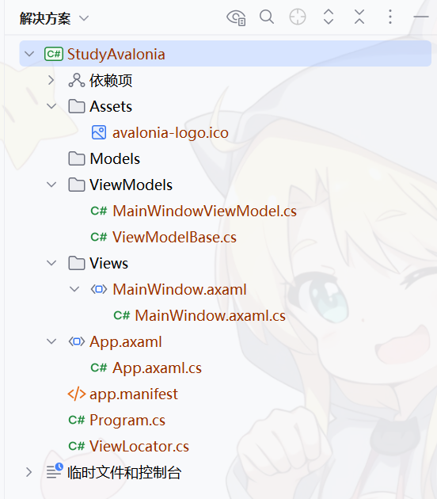

创建项目 与 结构介绍
创建您的第一个Avalonia项目
由于官网文档中有关“新建Avalonia项目”等部分描述的足够详细，因此该部分不再需要本教程重新讲述。为了减少笔者负担，故此处仅给出超链接。
您需要阅读完官网文档的以下内容, 阅读完以下内容后，您可以返回本教程，继续阅读剩余内容:
项目结构
本教程基于 Avalonia MVVM 式结构讲解。
本教程使用 Jetbrains Rider 作为示例IDE，您也可以使用Visual Studio或其他任何您喜爱的IDE。
现在，基于您在官网文档中学习到的内容，创建您的第一个 Avalonia MVVM 项目，以后的学习，我们将基于此项目展开。
将解决方案全部展开。现在您应该能从IDE的文件管理器中看到如下项目结构：
笔者接下来将逐步解释项目结构中各个文件夹，文件的作用。以方便您理解Avalonia MVVM项目是如何开发的
/Assests
该目录主要用于存放 Avalonia 程序的资源文件。譬如程序中要用到的图片，程序的字体，等等。这些资源文件统一放在/Assests目录下。这不是强制的，但是是建议的。
如您所见，IDE创建的项目中，/Assests下已经有了一个 avalonia-logo.ico 文件。这是程序窗口中引用的图标。如果您启动这个项目，您会发现窗口左上角显示的图标即为该图标。
此处应该说明，avalonia-logo.ico 并不是 Avalonia 窗口图标的强制命名。在后续章节中，我们会为您展示如何设置窗口的图标。
/Models
Models, 对应 MVVM 中的 "M"，即Model(模型)层。Models主要负责数据模型，业务逻辑等。比如如果您的应用程序需要一个User对象来表示用户，您可以在Models下创建User类。
/Views
Views, 对应 MVVM 中的 "V"，即View(视图)层。Views包含程序的界面，包含有限的，纯粹的展示用的逻辑，用于实现视觉行为。Views中包含的内容应该与业务逻辑无关。它不包含数据，不操作数据。它通过“数据绑定”与 ViewModel 通信。在后续的内容中，我们会为你介绍“数据绑定”和“ViewModel”
在 Avalonia 中，“视图”由一个.axaml和与之绑定的.cs文件构成。
由于Views包含程序的界面，因此，我们的程序的每个“界面”，都应该在这个文件夹里面。在下一节，你将看到我们如何创建“界面”并把它放在/Views下。
/ViewModels
ViewModels, 对应 MVVM 中的 "VM"，即ViewModel(视图模型)层。ViewModels中包含的类是View和Model之间的纽带。它通过数据绑定与View通信。
微软文档中的下图展示了 MVVM 模式是如何工作的

有关MVVM的详细介绍，请参阅 微软文档
在下一部分，我们将为您展示如何通过MVVM模式编写您的应用程序。
App.axaml与App.axaml.cs
整个应用由一个类表示，该类通常简称为 App。该类在 App.axaml 中定义，位于其代码隐藏文件 App.axaml.cs 中。您如果打开这个 App.axaml.cs，就会发现该类继承了 Avalonia.Application 。它代表了整个应用程序。
在本部分，我们先不深入介绍 App.axaml 和 App.axaml.cs 文件。在日后的学习中，我们再逐步的深入。现在只是对该文件做初步的了解。
app.manifest
app.manifest(应用程序清单)仅在Windows下有用。但不要删除它，这可能会带来潜在的问题。一般的 Avalonia 程序开发中，我们用不到这个文件。所以在这里笔者不做详细介绍。如果您感兴趣，可以查询微软文档：app.manifest
Program.cs
这是整个应用程序的入口文件。在这里您可以手动管理 Avalonia 应用程序的生命周期。有关“生命周期”和“手动管理生命周期”，笔者将在后续内容中介绍。
ViewLocator.cs
ViewLocator，顾名思义，就是locate view。它的作用是根据传参的ViewModel来找到对应的View，并返回该View的实例。这个类在实现页面切换等功能时非常有用。在后续学习实现页面切换时，我们将会用到并详细介绍这个类。
现在您已经对MVVM模式有了一定的基本概念，并简略了解了项目中各个文件的作用。在下一节，笔者将为你展示如何使用MVVM模式编写您的应用程序。